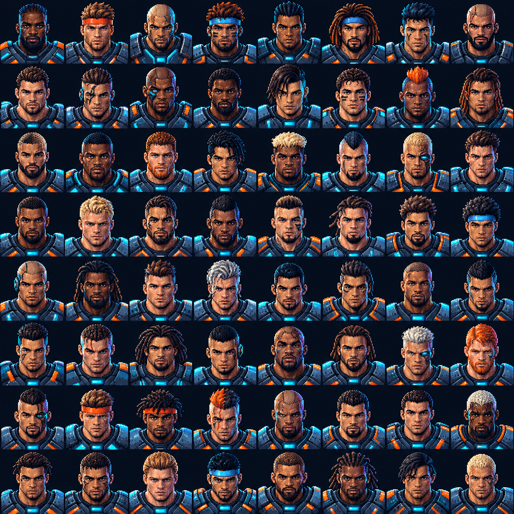
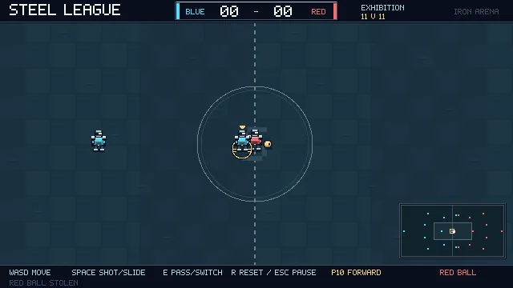
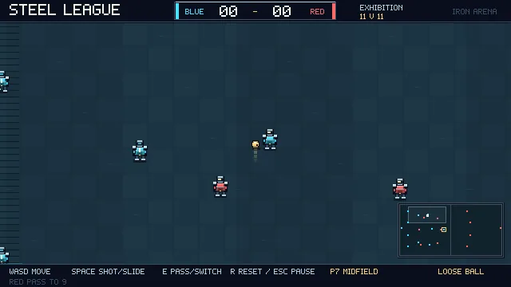

On the pitch
Eleven-a-side matches, AI opponents, tackles and team movement.
GAME · PROTOTYPE
A retro football game, built through experimentation.
Steel League is an arcade football project combining a retro look with a career mode. It explores match gameplay, team management and progression through divisions.

Eleven-a-side matches, AI opponents, tackles and team movement.
Manage a squad, make transfers and progress through divisions.
A basic multiplayer mode has been tested; the project is still evolving.
Screenshots
Exhibition matches captured from the current prototype.


A test build is not yet available for download from this site.